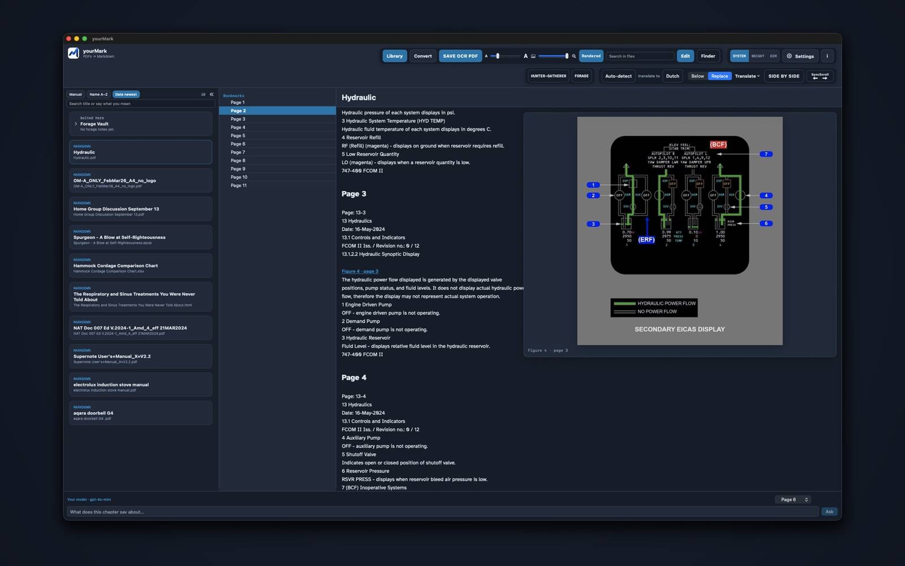
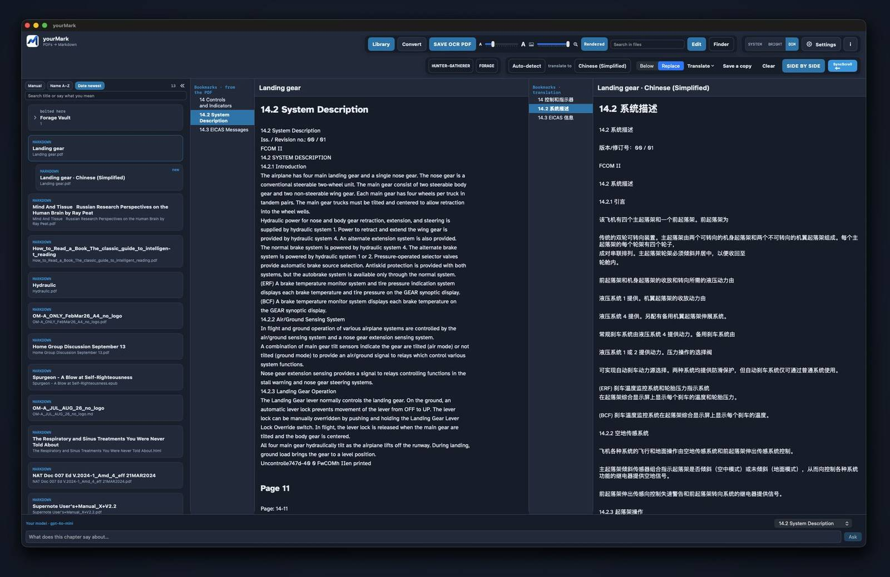
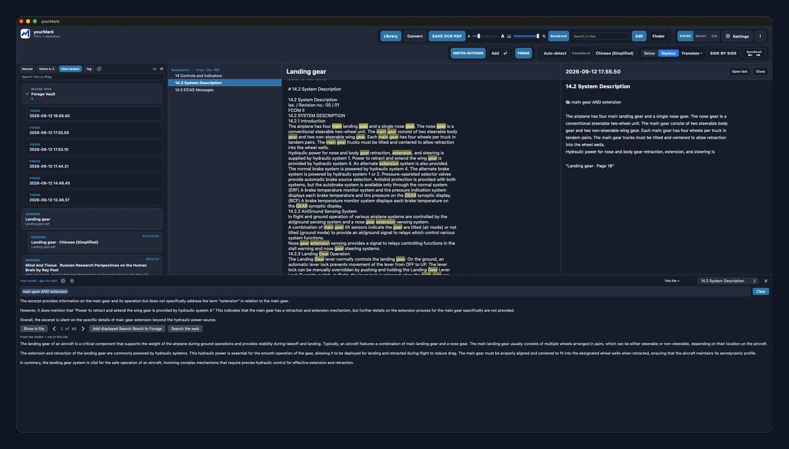

This tab
A browser preview. Drop a PDF with selectable text, Word, or ready Markdown. Nothing is uploaded. No OCR here.
MAC APP · BROWSER PREVIEW
Conversion stays on this computer. This tab is a simpler preview — no OCR. The Mac app is the one for scans, tables, Translate keys, and Finder.



This site is a browser preview. Drop a PDF with selectable text and it stays in this tab — nothing is uploaded. The Mac app is better for PDFs with graphics: OCR and layout. Scans, tables, and figures stay intact there. The browser version does not include OCR.
Drop PDFs, Word, or Markdown here
Or choose files. Converted text stays in this browser. Pictures in a PDF become blue Figure links.
yourMark is a reader. Download the Markdown, then open it in a free editor.
Mac: MarkEdit — the same editor the Mac app opens.
Windows: MarkText — free, open source.
A Google key or an Ask key is enough on the Mac. Here, either one is tried first; otherwise the preview service is used.
This browser often cannot call the model (a safety rule of the site). The Mac app can. A key here is only stored in this tab, for a test.
Files stay in this browser. Removing a card does not touch anything on disk.
Library, bookmarks, pictures, OCR, Ask, Translate, and FORAGE work best on the Mac. A Google Translate key or an Ask key is enough for Translate.
Mac app on GitHub · Windows exe · GitHub · Privacy
The first time you open the Mac app, you may see “downloaded from the internet.” That is normal. Click Open. The dim line means Apple already scanned it — the disk is notarized.
A browser preview. Drop a PDF with selectable text, Word, or ready Markdown. Nothing is uploaded. No OCR here.
Better for PDFs with graphics. OCR, layout, Translate, and Finder. Opens the GitHub intro — it does not start a download.
Drop a PDF or Word file. Repeating headers can be dropped in Settings. Numbered titles become headings. Pictures in the PDF become blue links.
Cards on the left. Search in files filters them. Bookmarks in the middle. The double chevron hides the library.
Turn Hunter on, select a passage, press Enter. Clips land on today’s FORAGE note beside the library.
Answers come from the open chapter. AND, OR, and NOT must be capitals, in the same sentence. Recent Asks stay in this tab.
Download the Markdown. Mac: MarkEdit. Windows: MarkText. Both are free and open source.
Hover a blue Figure link to see the picture. The slider next to A…A sets preview size. Click to open it. Scans still need the Mac app.
From and To on the reader. Below keeps the original. Replace shows only the translation. SIDE BY SIDE opens both. Save a copy writes a second card. The original stays.
Copy puts the Markdown on the clipboard for Grok or ChatGPT. Download writes a .md. Nothing is uploaded unless you press Ask or Translate.